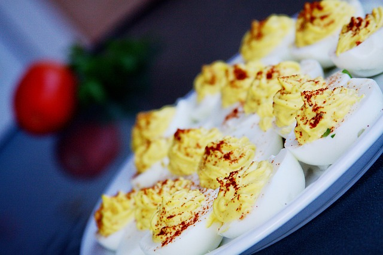

<div class="container-fluid">
	<div class="col-sm-4">
	<div class="card" >
		
		<div class="card-body">
	<h1 class="card-title">Eieren met Kerrie</h1>
	

	<div class="container-fluid">
		<div class="row">
		<div class="col-sm-3">
			<h5>TIME</h5>
		  	<p>45 Min</p>
		</div>
		<div class="col-sm-3">
			<h5>SERVINGS</h5>
		  	<p>4</p>
		  </div>
		</div>
	</div>

	<div>
		<h2>INGREDIËNTEN</h2>
		<ul>
			<li>4 eieren</li>
			<li>200 g langkorrelige rijst</li>
        </ul>
        <h3>Saus</h3>
        <ul>
            <li>1 eierdooier</li>
			<li>zout</li>
			<li>peper</li>
			<li>1/4 l olie</li>
			<li>1 eetlepel kerriepoeder</li>
        </ul>
	</div>

	<div>
		<h2>Instructies</h2>
		<ul>
            <li>De eieren gedurende 10 minuten in gezouten ziedend azijnwater hard laten koken.</li>
            <li>Ze met koud water afspoelen alvorens ze te pellen.</li>
            <li>Ze in tweeën snijden en laten afkoelen.</li>
            <li>Intussen de rijst gedurende 20 minuten in gezouten ziedend water laten koken.</li>
            <li>Hem laten uitlekken en over 8 koppen of kommetjes verdelen.</li>
            <li>Laten afkoelen en hem op de dienschotel storten.</li>
            <li>Op elk hoopje rijst een half hardgekookt ei leggen.</li>
            <li>Een vloeibare mayonaise bereiden met bovenvermelde ingrediënten.</li>
            <li>Er de kerrie doormengen.</li>
            <li>De mayonaise over de eieren gieten.</li>
            <li>Bestrooien met kerrie.</li>
            <li>Desgewenst met takjes peterselie of selderij garneren en koel opdienen.</li>
		</ul>
	</div>
</div>
</div>
</div>
</div>